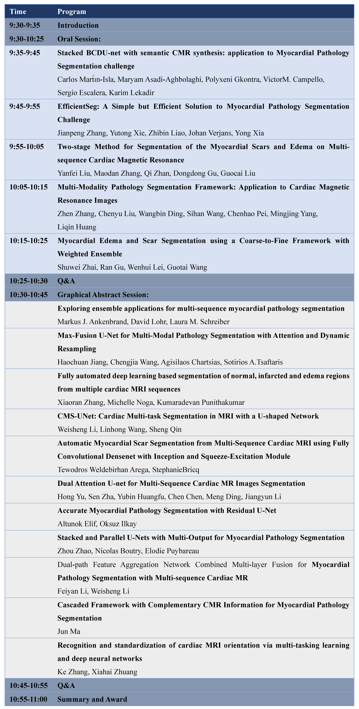

Program (UTC time: 9:30-11:00am, 4-Oct-2020)

Accepted Papers:
- EfficientSeg: A Simple but Efficient Solution to Myocardial Pathology Segmentation Challenge
Jianpeng Zhang, Yutong Xie, Zhibin Liao, Johan Verjans, Yong Xia - Cascaded Framework with Complementary CMR Information for Myocardial Pathology Segmentation
Jun Ma - Two-stage Method for Segmentation of the Myocardial Scars and Edema on Multi-sequence Cardiac Magnetic Resonance
Yanfei Liu, Maodan Zhang, Qi Zhan, Dongdong Gu, Guocai Liu - Dual-path Feature Aggregation Network Combined Multi-layer Fusion for Myocardial Pathology Segmentation with Multi-sequence Cardiac MR
Feiyan Li, Weisheng Li - Max-Fusion U-Net for Multi-Modal Pathology Segmentation with Attention and Dynamic Resampling
Haochuan Jiang, Chengjia Wang, Agisilaos Chartsias, Sotirios A.Tsaftaris - CMS-UNet: Cardiac Multi-task Segmentation in MRI with a U-shaped Network
Weisheng Li, Linhong Wang, Sheng Qin - Dual Attention U-net for Multi-Sequence Cardiac MR Images Segmentation
Hong Yu, Sen Zha, Yubin Huangfu, Chen Chen, Meng Ding, Jiangyun Li - Automatic Myocardial Scar Segmentation from Multi-Sequence Cardiac MRI using Fully Convolutional Densenet with Inception and Squeeze-Excitation Module
Tewodros Weldebirhan Arega, Stephanie Bricq - Multi-Modality Pathology Segmentation Framework: Application to Cardiac Magnetic Resonance Images
Zhen Zhang, Chenyu Liu, Wangbin Ding, Sihan Wang, Chenhao Pei, Mingjing Yang, Liqin Huang - Accurate Myocardial Pathology Segmentation with Residual U-Net
Altunok Elif, Oksuz Ilkay - Myocardial Edema and Scar Segmentation using a Coarse-to-Fine Framework with Weighted Ensemble
Shuwei Zhai, Ran Gu, Wenhui Lei, Guotai Wang - Fully automated deep learning based segmentation of normal, infarcted and edema regions from multiple cardiac MRI sequences
Xiaoran Zhang, Michelle Noga, Kumaradevan Punithakumar - Exploring ensemble applications for multi-sequence myocardial pathology segmentation
Markus J. Ankenbrand, David Lohr, Laura M. Schreiber - Stacked and Parallel U-Nets with Multi-Output for Myocardial Pathology Segmentation
Zhou Zhao, Nicolas Boutry, Elodie Puybareau - Stacked BCDU-net with semantic CMRsynthesis: application to Myocardial PathologySegmentation challenge
Carlos Mart́ın-Isla, Maryam Asadi-Aghbolaghi, Polyxeni Gkontra, Victor M. Campello, Sergio Escalera, Karim Lekadir - Recognition and standardization of cardiac MRI orientation via multi-tasking learning and deep neural networks
Ke Zhang, Xiahai Zhuang